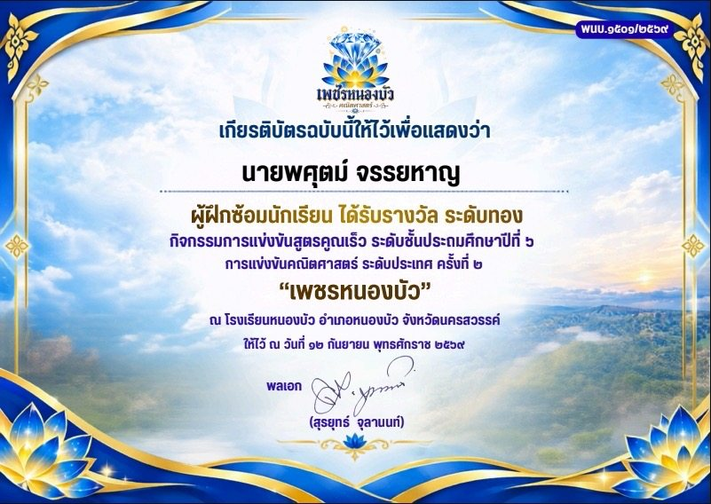
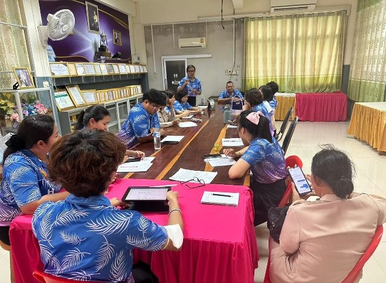
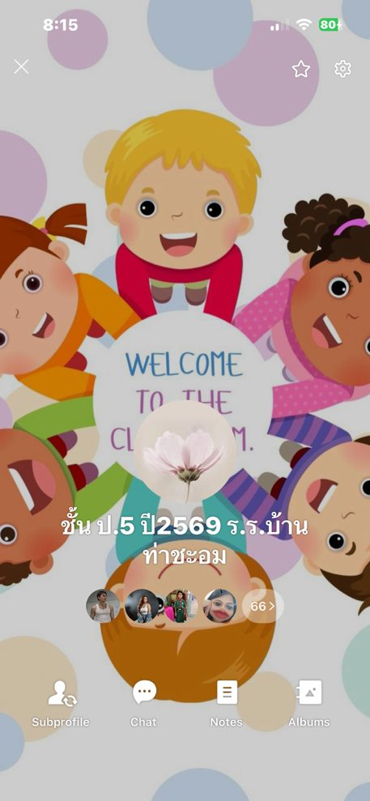

ด้านการพัฒนาตนเองและวิชาชีพ
ลักษณะงานครอบคลุมการพัฒนาตนเองอย่างเป็นระบบและต่อเนื่อง การมีส่วนร่วมในการแลกเปลี่ยนเรียนรู้ทางวิชาชีพ และการนำความรู้ ความสามารถ ทักษะที่ได้จากการพัฒนาตนเองและวิชาชีพมาใช้ในการพัฒนาการจัดการเรียนรู้ คุณภาพผู้เรียน และนวัตกรรมการจัดการเรียนรู้
12 คะแนน · 3 ตัวชี้วัดย่อยพัฒนาตนเองอย่างเป็นระบบและต่อเนื่อง
เข้าร่วมอบรมกับหน่วยงานที่จัดการอบรมเกี่ยวกับ Active Learning การใช้ภาษาไทยและภาษาอังกฤษเพื่อการสื่อสาร และเทคโนโลยีดิจิทัลเพื่อการศึกษา เช่น การใช้เว็บไซต์ Canva สร้างสื่อการเรียนการสอน ใบกิจกรรม ใบความรู้ โปสเตอร์ และสไลด์นำเสนอ พร้อมศึกษาค้นคว้าความรู้เกี่ยวกับการพัฒนาสมรรถนะวิชาชีพครูจากเว็บไซต์คุรุสภาและหน่วยงานทางการศึกษา

มีส่วนร่วมในการแลกเปลี่ยนเรียนรู้ทางวิชาชีพ
มีส่วนร่วมกับกลุ่มสาระการเรียนรู้คณิตศาสตร์ในการแลกเปลี่ยนเรียนรู้ทางวิชาชีพ ผ่านกิจกรรมนิเทศการจัดการเรียนรู้ และนำผลจากการประชุมชุมชนแห่งการเรียนรู้ทางวิชาชีพ (PLC) ไปสร้างเป็นสื่อ นวัตกรรม เพื่อนำมาใช้ปรับปรุงและพัฒนาคุณภาพผู้เรียน

นำความรู้ ความสามารถ ทักษะที่ได้จากการพัฒนาตนเองและวิชาชีพมาใช้
นำความรู้ ความสามารถ และทักษะที่ได้จากการพัฒนาตนเองและวิชาชีพมาใช้พัฒนาทักษะการสื่อสารและสื่อความหมายทางคณิตศาสตร์ ด้วยการจัดกิจกรรมเชิงรุก (Active Learning) เรื่อง ร้อยละ ของนักเรียนชั้นประถมศึกษาปีที่ 5 เพื่อเป็นนวัตกรรมการจัดการเรียนรู้ที่ส่งผลต่อการพัฒนาคุณภาพผู้เรียน

ผลลัพธ์ (Outcomes) และตัวชี้วัด (Indicators)
ผลลัพธ์ที่คาดหวังกับผู้เรียน
- ผู้เรียนได้รับการแก้ไขปัญหาการเรียนรู้ด้วยเทคนิค วิธีการ สื่อ นวัตกรรม และเทคโนโลยีที่หลากหลาย ซึ่งได้จากการพัฒนาตนเองของครู
- ผู้เรียนได้รับการแก้ไขปัญหา พัฒนาการเรียนรู้ ด้วยผลจากการแลกเปลี่ยนเรียนรู้ทางวิชาชีพ (PLC)
- ผู้เรียนได้รับการพัฒนาทักษะการสื่อสารและสื่อความหมายทางคณิตศาสตร์ เรื่อง ร้อยละ ของชั้นประถมศึกษาปีที่ 5
ตัวชี้วัดที่วัดผลได้จริง
- ผู้เรียนทุกคนได้รับการแก้ไขปัญหาด้วยนวัตกรรมจากการพัฒนาตนเองของครู
- ผู้เรียนทุกคนได้รับผลจากการมีส่วนร่วมในกิจกรรมชุมชนแห่งการเรียนรู้ทางวิชาชีพ (PLC)
- ผู้เรียนร้อยละ 60 ได้รับผลจากนวัตกรรมการจัดการเรียนรู้ตามเป้าหมายที่กำหนดไว้